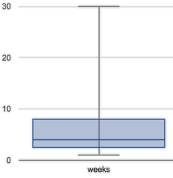

Students learn how to measure central tendency (using mean, median, and mode), as well as variation (visualizing quartiles with box plots). After applying these concepts to a contrived dataset, they apply them to their own datasets and interpret the results in their research papers.
Students take the mean, median and mode of various columns in the animals table
Students use Table Plans to create measures and visualizations of center and variation
Students describe the centers and variation in their chosen dataset
Standards and Evidence Statements:
Standards with prefix BS are specific to Bootstrap; others are from the Common Core. Mouse over each standard to see its corresponding evidence statements. Our Standards Document shows which units cover each standard.
6.SP.4-5: The student summarizes and describes distributions
Summarize numerical data sets in relation to their context, such as by: Reporting the number of observations, Describing the nature of the attribute under investigation, including how it was measured and its units of measurement, Giving quantitative measures of center (median and/or mean) and variability (interquartile range and/or mean absolute deviation), as well as describing any overall pattern and any striking deviations from the overall pattern with reference to the context in which the data were gathered, or Relating the choice of measures of center and variability to the shape of the data distribution and the context in which the data were gathered.
Data 3.2.1: Extract information from data to discover and explain connections, patterns, or trends.
Large data sets provide opportunities and challenges for extracting information and knowledge.
Large data sets provide opportunities for identifying trends, making connections in data, and solving problems.
Computing tools facilitate the discovery of connections in information within large data sets.
HSS.ID.A: Summarize, represent, and interpret data on a single count or measurement variable
Represent data with plots on the real number line (dot plots, histograms, and box plots).
Use statistics appropriate to the shape of the data distribution to compare center (median, mean) and spread (interquartile range, standard deviation) of two or more different data sets.
S-ID.1-4: The student uses data summary techniques to aid interpretation of a single count or measurement variable
plots on the real number line (dot plots, histograms, and box plots) to represent data
comparison of two or more different data sets by measure of center (median, mean) and spread (interquartile range) appropriate to the shape of the data distribution
Length: 90 Minutes
Glossary:
box plot: The box plot (a.k.a. box and whisker diagram) is a way of displaying the distribution of data based on the five-number summary: minimum, first quartile, median, third quartile, and maximum
interquartile range: The interquartile range (IQR) is a measure of variability, based on dividing a data set into four quartiles. The values that divide each part are called the first (Q1), second (Q2), and third quartiles (Q3)
mean: the arithmetic mean; a number with the smallest total difference between all elements in a quantitative data set
median: the middle element of a quantitative data set
mode: the most commonly appearing value in a quantitative data set
outlier: an observation point that is distant from other observations, perhaps due to experimental error or measurement variability.
quartile: Each of four equal-sized groups into which a population can be divided, according to the distribution of values of a particular variable
range: the type of data that a function produces
Materials:
Preparation:
Computer for each student (or pair), with access to the internet
IntroductionAnimal shelters make decisions about food, capacity and policies based on how long it takes for animals to be adopted. But looking at the entire weeks column is tedious, and isn’t always the easiest way to make sense of the data. What we want is a way to summarize a dataset, so that we can describe the data quickly and easily.
According to the Animal Shelter Bureau, the average pet waits 6 weeks to be adopted.
Does that mean most pets wait more than a month to find homes? Why or why not?
Invite an open discussion for a few minutes.
"The average pet waits 6 weeks" is a statement about the entire dataset, which summarizes a whole column of values into a single number. Summarizing a big dataset means that some information gets lost, so it’s important to pick the right summary. Picking the wrong summary can have serious implications! Here are just a few examples of summary data being used for important things. Do you think these summaries are accurate or not?
Students are sometimes summarized by two numbers - their GPA and SAT scores - which can impact where they go to college or how much financial aid they get.
Schools are sometimes summarized by a few numbers - student pass rates and attendance, for example - which can determine whether or not the school gets shut down.
Adults are often summarized by a single number - like their credit score - which determines their ability to get a job or a home loan.
When buying uniforms for a sports team, a coach might look for the most-common size that their players wear.
Can you think of other examples where a number or two are used to summarize something complex?
Data Scientists often look at two kinds of summaries: Measures of Center and Variation. Finding ways to summarize data accurately is essential. In this lesson, we’ll check the "6 week" claim made by the Animal Shelter Bureau, and see if it’s an accurate way to summarize the data.
Measures of Center
Overview
Learning Objectives
Students learn different notions of "center", including mean, median and mode
Students explore how to properly talk about measures of center
Evidence Statementes
Product Outcomes
Students take the mean, median and mode of various columns in the animals table
Materials
Preparation
Measures of Center(Time 20 minutes)
Measures of CenterIf we plotted all the weeks values as points on a number line, what could we say about where those points are clustered? Is there a midpoint? Is there a point that shows up most often? Each of these are different ways of "measuring center".
Draw some sample points on a number line, and have students volunteer different ways to summarize the distribution.
The Animal Shelter Bureau used one method of summary, called the mean, or average. To take the average of a column, we add all the numbers in that column and divide by the number of rows.
This lesson does not teach the algorithm for computing averages, but this would be an appropriate time to do so.
Pyret has a way for us to compute the mean of any column in a Table:
What is its name? Domain? Range?
Notice that calculating the mean requires being able to add and divide, so the mean only makes sense for quantitative data. For example, the mean of a list of Presidents doesn’t make sense. Same thing for a list of zip codes: even though we can and divide the numbers of zip codes, the output doesn’t correspond to some "center" zip code.
Type mean(animals-table, "weeks"). What does this give us? Does this support the Bureau’s claims?
Open your workbooks to Page 47. We’ve already decided on the answer to Question 1 (weeks). Under the "measures of center" section, fill in the computed mean.
You computed the mean of that list to be just 6 weeks. That IS the average, but if we look at the dots on our number line, we can see that most of the animals in the table waited for less than 4 weeks! What is throwing off the average so much?
Point students to Kujo and Mr. Peanutbutter.
In this case, the mean is being thrown off by a few extreme data points. These extreme points are called outliers, because they fall far outside of the rest of the dataset. Calculating the mean is great when all the points in a dataset are evenly distributed, but it breaks down for datasets with huge outliers.
Another way to measure center is to line up all of the data points - in order - and find a point in the center where half of the values are smaller and the other half are larger. This is the median, or "middle" value of a list.
As an example, consider this list:
Here 2 is the median, because it separates the "top half" (all values greater than 2, which is just 3), and the "bottom half" (all values less than or equal to 2).
If students are not already familiar with median, we recommend the following
"pencil and paper algorithm" for median finding over a list:
Cross out the highest number in the list.
Cross out the lowest number in the list.
Repeat these steps until there is only one number left in the list. This number is the median. If there are two numbers left, take the mean of those numbers.
Pyret has a function to compute the median of a list as well, with the contract:
# median :: (t :: Table, col :: String) -> Number
Compute the median for the weeks column in our dataset, and add this to Page 47. Is it different than the mean? What can we conclude when the median is so much lower than the mean? For practice, compute the mean and median for the weight and age columns.
The third and last measure of center is the mode. The modes of a list are all the elements that appear most often in the list. Median and Mean always produce one number. Mode is different than the other measures, since a list can have multiple modes - or even no modes at all!
The mode of the first value is empty, because no element is repeated at all.
The mode list of the second value is 2, since 2 appears more than any other number.
The mode list of the last value is a list containing 1 and 4, because 1 and 4 both appear more often than any other element, and because they appear equally often.
In Pyret, the mode list is calculated by the modes function, which consumes a List of Numbers and produces a List of Numbers.
Compute the modes of the weeks column, and add it to Page 47. What did you get? The most common number of weeks an animal waits is only 1! That’s well below our mean, which is further proof that there must be some outliers skewing the results.
At this point, we have a lot of evidence that suggests the Bureau’s summary is misleading. Our mean wait time agrees with their findings, but we have two reasons to doubt the validity of their measurement:
The median is only 4 weeks, meaning half the animals wait less than a month!
The mode of our dataset is only 1, which means there’s a cluster of animals that are adopted in just one week!
The Animal Shelter Bureau started with a fact: the mean wait time is over 6 weeks. But then they drew a conclusion without checking to see if that was the right statistic to look at. As Data Scientists, we had to look deeper into the data to find out whether or not to trust the Bureau.
"In 2003, the average American family earned $43,000 a year - well above the poverty line! Therefore very few Americans were living in poverty." Do you trust this statement? Why or why not?
Consider how many policies or laws are informed by statistics like this! Knowing about measures of center helps us see through misleading statements.
Variation Matters
You now have three different ways to measure center in a dataset. But how do you know which one to use? Depending on the variation in the dataset, a measure could be really useful or totally useless! Here are some guidelines for when to use one measurement over the other:
If the data is unlikely to have values occurring multiple times (like with decimals, or with grades), do not use mode.
If the data is more "coarse grained", meaning the data is quantitative but there are only a small number of possible values each entry can take, then the modes will be useful.
If the data is going to have lots of outliers, the median gives a better estimate of the center than mean.
Measures of Variation
Overview
Learning Objectives
Students learn different measures of variation, including range, and interquartile range
Students practice describing variation using these concepts
Evidence Statementes
Product Outcomes
Materials
Preparation
Measures of Variation(Time 20 minutes)
Measures of VariationMeasuring the "center" of a dataset is helpful, but we quickly found that it’s also important to talk about the variation in the dataset. So how do we do that?
Suppose we lined up all of the values in the weeks column from smallest to largest, and then split the line up into two equal groups by taking the median. The first group is the 50% of animals that waited the least amount of time to be adopted. The fourth group is the 50% of animals that waited the greatest amount of time. Now, suppose we took the medians of both groups, to divide the line into four equal sections. Data Scientists call these groups quartiles.
The first quartile (Q1) is the 25% of animals that waited the least amount of time. What do the other three quartiles represent?
Point out the five numbers that create these quartiles: the three medians, the minimum and the maximum.
We can use box plots to visualize these quartiles. These plots can easily be represented using just five numbers, which makes them convenient ways to summarize data. Below is the contract for box-plot, along with an example that will make a box plot for the weeks column in the animals-table.
Type in this expression in the Interactions Area, and see the resulting plot.

This plot shows us the variation in our dataset according to five numbers.
The minimum value in the dataset (at the bottom). In our dataset, that’s just 1 week.
The Second Quartile (Q2) value (the line in the middle), which is the median of the whole dataset. We already computed this, as 4.
The maximum value in the dataset (at the top). In our dataset, that’s 30 weeks.
The First Quartile (Q1) (the bottom edge of the box), which is computed by taking the median of the all the smaller half of the values. In the weeks column, that’s 2.5 weeks.
The Third Quartile (Q3) (the bottom edge of the box), which is computed by taking the median of the all the larger half of the values. That’s 8 weeks in our dataset.
One way to summarize the variation in the dataset is to measure the distance between the largest value and the smallest value. When we talk about functions having many possible outputs, we use the term "Range" to describe them. When we look at all the values between the smallest and largest in our dataset, we use the same term.
On page Page 47, and fill in the five-number summary for the weeks column, and sketch the box-plot. Find the range of this dataset.
Data Scientists subtract the 1st quartile from the 3rd quartile to compute the range of the "middle half" of the dataset, also called the interquartile range.
Find the interquartile range of this dataset.
The Range of our dataset is 29 weeks, but the interquartile range is only 5.5 weeks! That means that 50% of the animals fall into only 19% of the range! That tells us that there are definitely a lot of outliers. Looking at the first and third quartiles, we can conclude that the interquartile range is also skewed towards the minimum.
On page Page 47, write down your conclusion for this box-plot.
Table Plans
Overview
Learning Objectives
Evidence Statementes
Product Outcomes
Students use Table Plans to create measures and visualizations of center and variation
Materials
Preparation
Table Plans(Time 20 minutes)
Table PlansLet’s put some of our new measures of center to work at the animal shelter...
Turn to Page 48, and read the word problem carefully. Then write a Contract and Purpose Statement for this word problem.
This time, our Result isn’t a Table – it’s an Image: the box-plot of the ages for all the dogs in the Sample Table.
Draw a rough sketch of the plot you expect. When you’re done, move on to defining the function, and fill out the methods to define the table. Do we need to build any columns? Filter any rows? Order the table?
We’ve got most of our function written:
This time, our result uses the box-plot function to visualize the five numbers that help us summarize the variation.
If there’s only one method being used, it’s convention to put the method call on the same line as the table.
Putting it all together, we get:
Your Dataset
Overview
Learning Objectives
Evidence Statementes
Product Outcomes
Students describe the centers and variation in their chosen dataset
Materials
Preparation
Your Dataset(Time 20 minutes)
Your DatasetNow that you’re comfortable creating box plots and looking at measures of variation on the computer, it’s time to put your skills to the test!
Turn to Page 49 and complete the questions you see there.
Review students’ answers, especially to the question five.
By now, you’ve got a good handle on how to think about measures of center variation, and it’s time to apply those skills to your dataset!
Take 10 minutes to fill out Page 50 in your Student Workbook. Choose a column to investigate, and write up your findings.
Closing
Overview
Learning Objectives
Evidence Statementes
Product Outcomes
Materials
Preparation
Closing(Time 5 minutes)
ClosingData Scientists are skeptical people: they don’t trust a claim unless they can see the data, or at least get some summary information about the center and variation in the dataset. In the next Unit, you’ll investigate new ways to visualize variation and distribution.